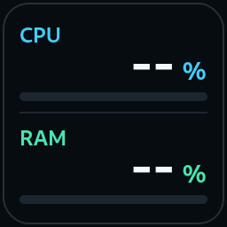

Waiting for Stream Dock...
Reading Windows counters...
Monitoring pauses when this view is hidden. No GPU sensors, Ollama checks, WMI queries or repeated PowerShell processes. Colours turn amber at 90%, red at 97%.
Enter these locally. No Bambu cloud login is needed.
Stored encrypted for your Windows user. Never included in diagnostic reports.
Recommended for P1S. Only asks for telemetry; never starts, pauses or stops a print. Normally limited to once every five minutes. During initial connection or missing status, retries are limited to one request every 30 seconds. Uncheck for passive listening only.
Check that the IP address above belongs to your P1S on your trusted home network. Its certificate fingerprint is shown below; verify it independently where possible. No LAN code has been sent to this unapproved certificate.
The saved fingerprint is checked on future connections. Do not approve an unexpected certificate change without checking the printer.
Waiting for live status.
The report excludes the access code, but may contain your printer IP, serial and job name. Inspect it before sharing.
Keep the PC and printer reachable on the same local network. Startup and temporary network failures retry automatically while the view is visible. A quiet connection is resynchronised; use Reconnect only as a manual override. Try your current Bambu Studio/Handy setup first; this plugin does not change LAN-only mode, firmware or security settings. If it cannot connect, use the reason above instead of disabling security settings.
FoughtApple Desk Displays · 1.2.1
Read-only views. Steam Account Status and your seven buttons are unchanged.